Vizual
Galerie Foto
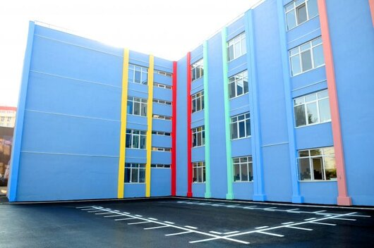
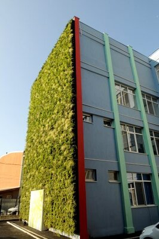
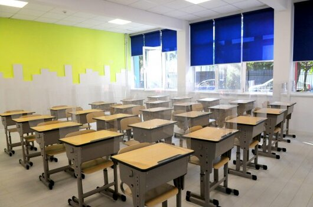
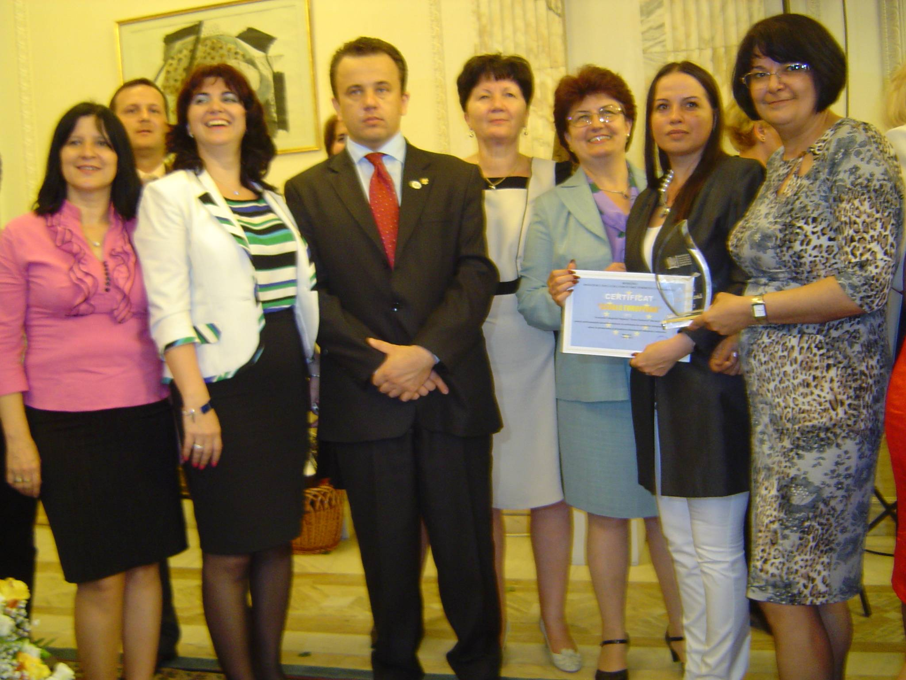
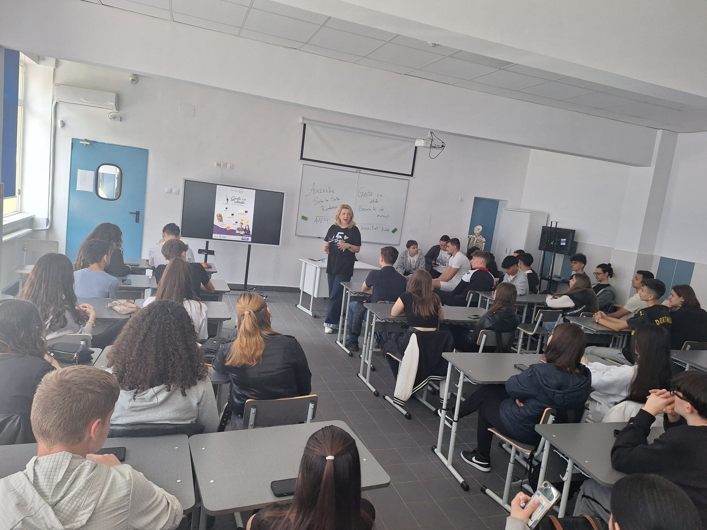
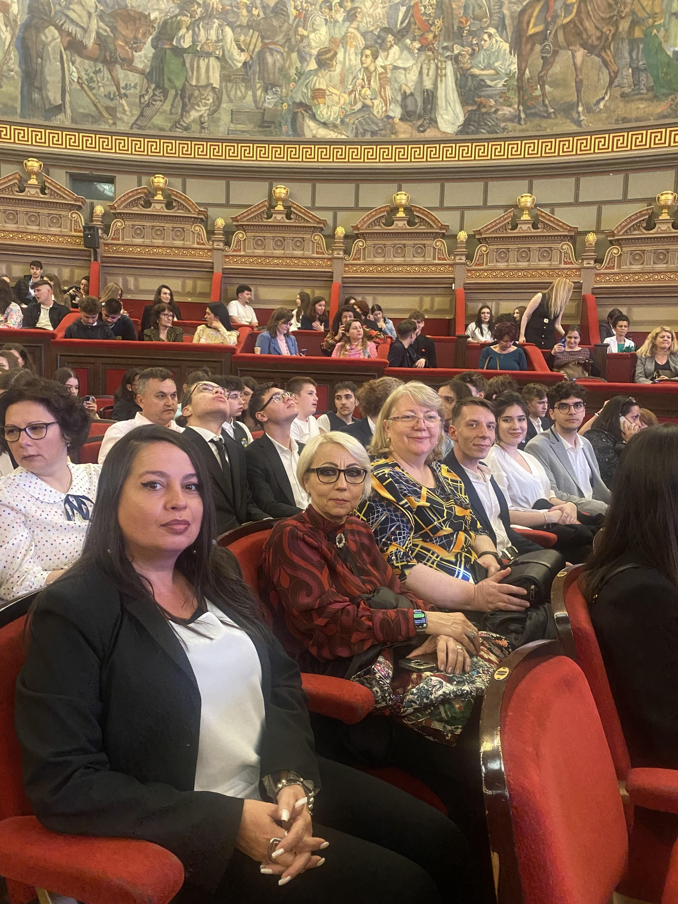
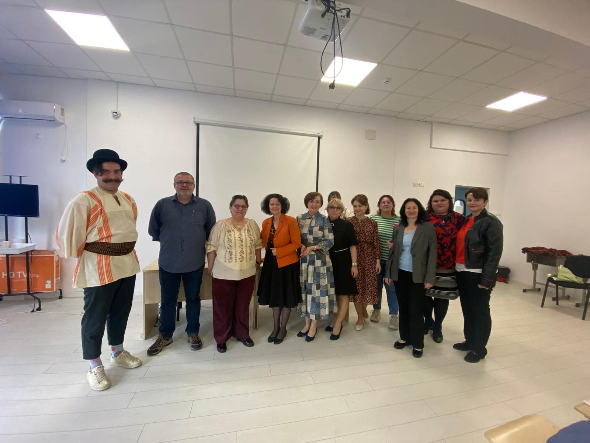
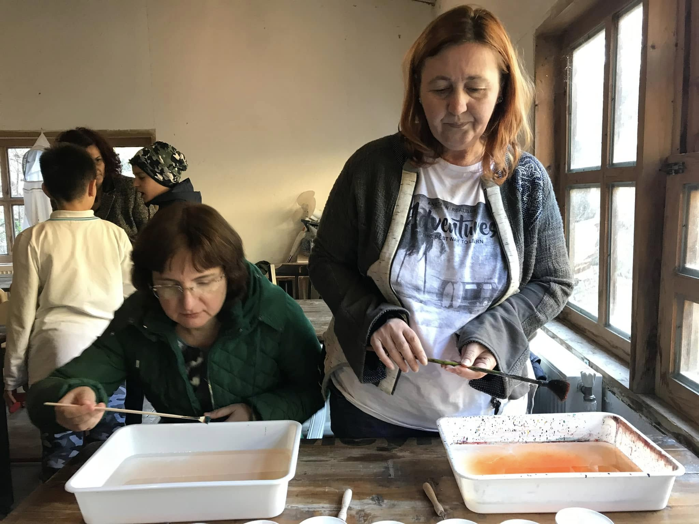
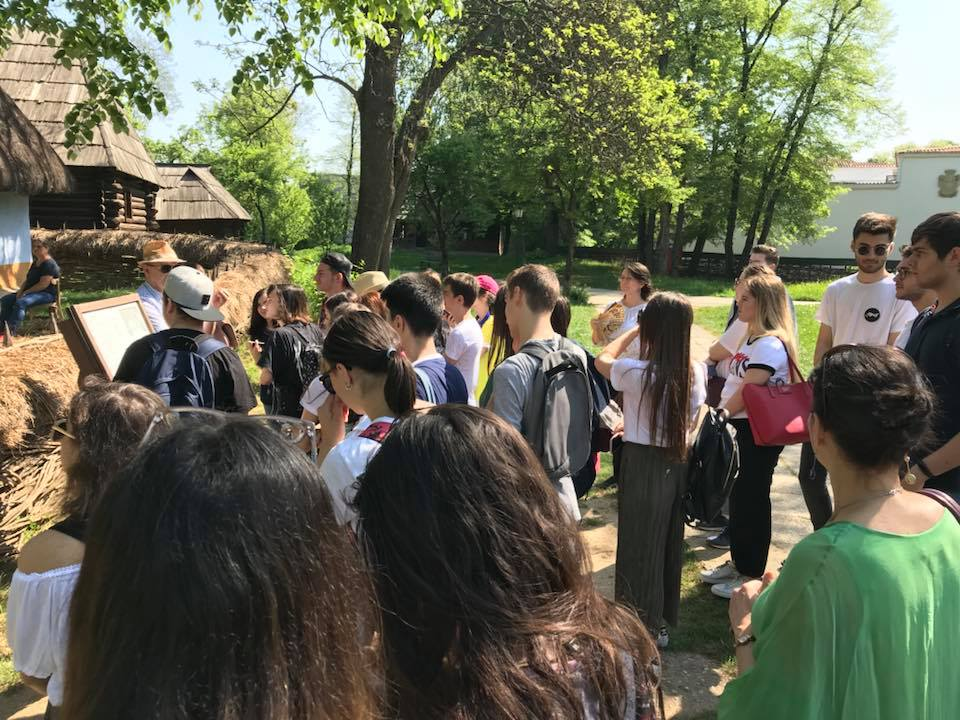
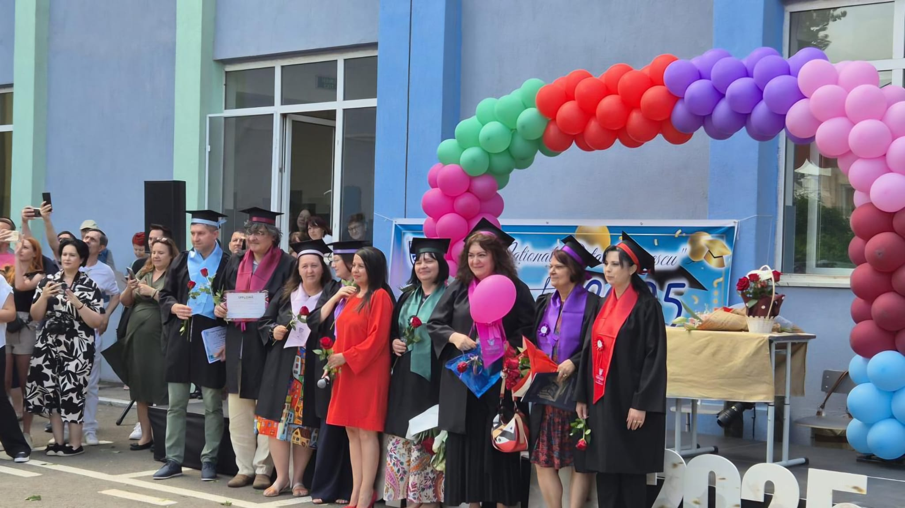
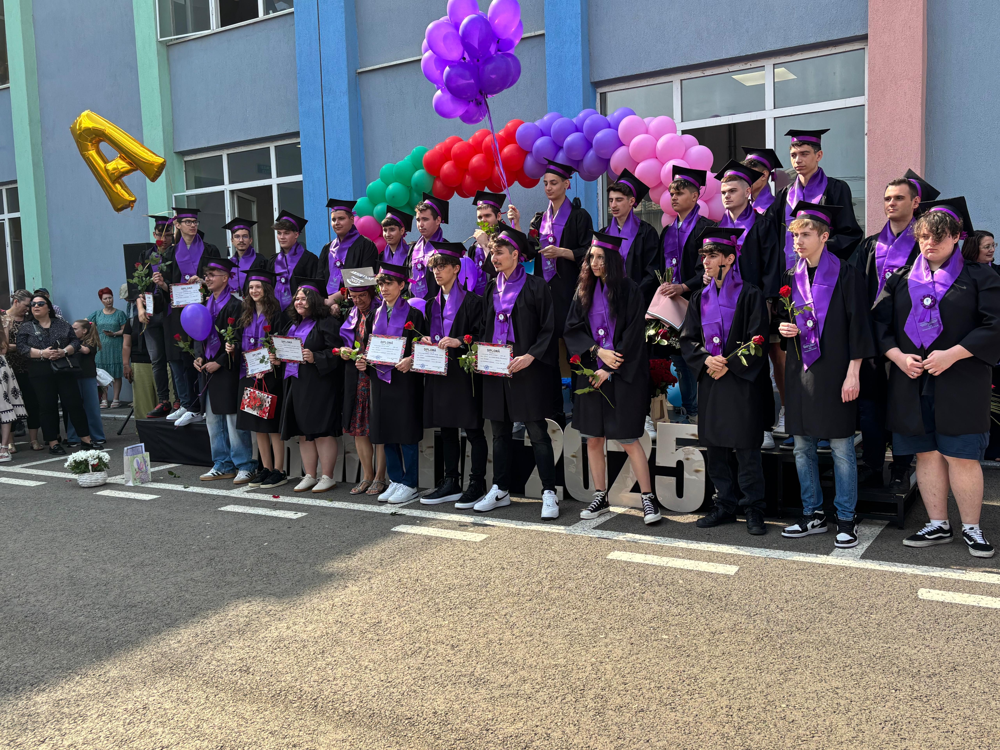

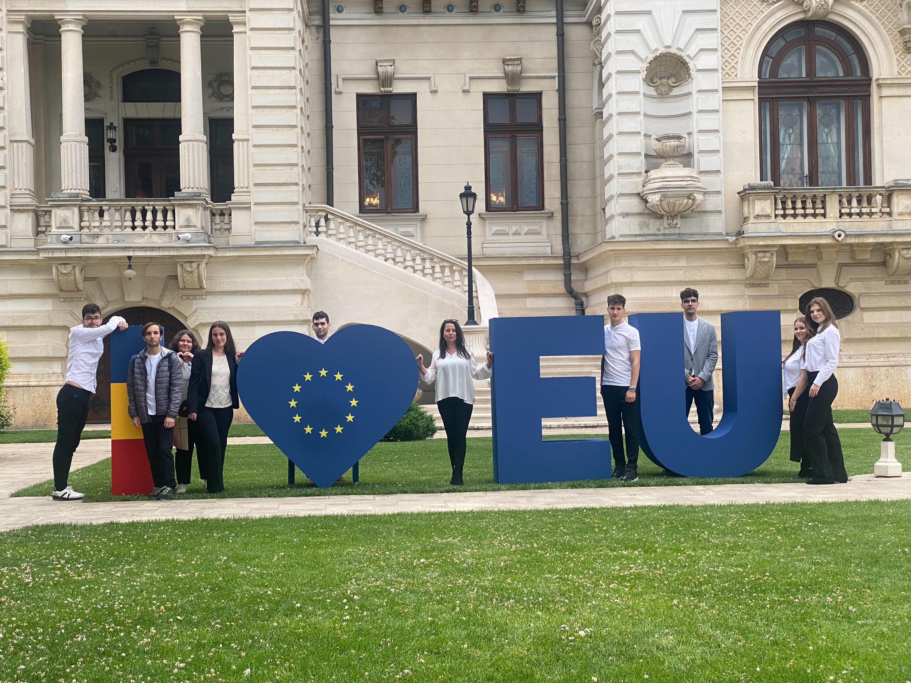
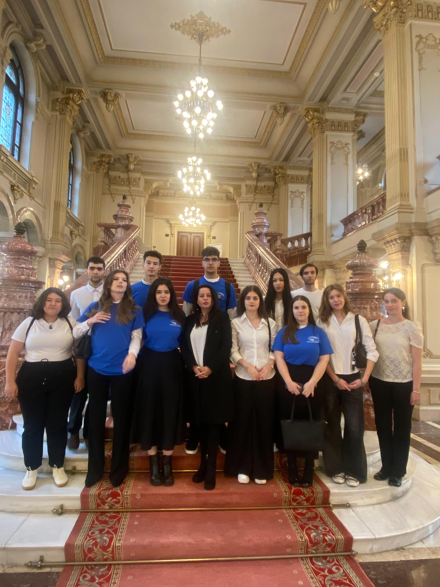

Colegiul Național „Octav Onicescu" — tradiție, excelență și inovație din 1929
Excelență în educație din 1929
2012-2015, 2015-2018, 2022-2025
Parlamentul European
Educație Școlară
Școală Asociată
Membru
Instituția funcționează inițial ca școală generală, sub denumirea Școala Generală nr. 102.
Școala își continuă dezvoltarea sub profil real-umanist, consolidând baza academică a elevilor.
Instituția funcționează ca liceu teoretic, cu accent pe formarea elevilor pentru continuarea studiilor.
În această etapă, liceul capătă profil industrial și își extinde baza materială și numărul de clase.
După 1989, instituția funcționează sub titulatura de Grup Școlar Industrial IMUC.
Din 1993 până în 2005, unitatea a funcționat sub titulatura de Grup Școlar Industrial „Octav Onicescu”.
Începând cu 1 ianuarie 2006, instituția primește statutul de Colegiu Național „Octav Onicescu”.
Colegiul beneficiază de o clădire modernă, mobilier nou, dotare cu Internet și echipamente IT, sistem audio-video centralizat și videoproiectoare în toate spațiile de învățare.
Se finalizează reabilitarea și modernizarea bazei sportive, cu o sală de sport complet echipată și două terenuri reamenajate.
Astăzi, colegiul numără 869 de elevi în 30 de clase, cu 57 de cadre didactice calificate. Instituția dispune de 18 săli de curs, 13 laboratoare și cabinete, precum și o bibliotecă modernă.
Fondatorul Școlii Românești de Probabilități
Octav Onicescu (20 august 1892, Botoșani – 19 august 1983, București) a fost unul dintre cei mai mari matematicieni români, fondator al școlii românești de teoria probabilităților și statistică matematică.
A studiat la Universitatea din București și apoi la Roma, sub îndrumarea lui Tullio Levi-Civita. A introdus conceptul de energie informațională, o alternativă la entropia lui Shannon.
„Creația închide ceva din absolutul rece al existenței, așa încât legea viitorului, deci și a tinerilor de astăzi, are următorul enunț: veți crea, veți avea; nu veți crea, nu veți fi!"
— Octav Onicescu
Valori transmise din generație în generație
Urmând tradițiile Colegiului, elevii participă activ la olimpiade la mai multe discipline, cum ar fi limba română, matematica și informatica, obținând rezultate remarcabile la nivel municipal și național.
Elevii participă la proiecte artistice și culturale, dezvoltându-și creativitatea și abilitățile de exprimare.
Sărbătorirea anuală a înființării colegiului, cu programe dedicate istoriei și tradițiilor instituției.
Momentul emoționant în care absolvenții primesc diplomele și își iau rămas bun de la profesori și colegi.
Tradiția performanței la examene și concursuri, cu o rată de promovabilitate la Bacalaureat de peste 97%.
Profile și specializări pentru anul școlar 2025-2026
Colegiul Național „Octav Onicescu" oferă elevilor o gamă diversificată de specializări, toate cu profil teoretic, pregătindu-i pentru continuarea studiilor în învățământul superior și pentru integrarea pe piața muncii.
Specializare pentru elevii pasionați de programare și tehnologie, cu accent pe dezvoltarea competențelor digitale avansate.
Combinație perfectă între competențe matematice și lingvistice, pregătind elevii pentru o carieră internațională.
Profilul clasic pentru elevii cu înclinații către științele exacte, oferind o pregătire solidă în matematică și informatică.
Pentru iubitorii de literatură și limbi străine, cu accent pe dezvoltarea competențelor de comunicare și analiză literară.
Specializare pentru viitorii sociologi, psihologi, juriști sau economiști, cu accent pe înțelegerea societății contemporane.













Strada Trivale Nr. 29, București Sector 4
021 460 3544
Luni - Vineri: 08:00 - 18:00